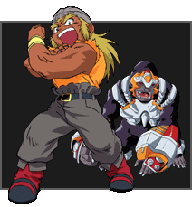

|
Tyson is a strong-willed thirteen-year old who'll never turn down a challenge no matter how high the odds are stacked against him. But when the chips are down,Tyson always finds a way to succeed, even if it means working his butt off to get there. He is an only child who lives with his grandfather who he has a deep respect for. Unfortunately, like any young kid,Tyson doesn't always show his grandfather the proper respect he would like. His youthful eagerness and over-confidence in his own abilities tend to land him in trouble.Tyson rarely keeps a cool head. He jumps into battles without thinking, and the
only thing that gets him through is instinct and his faith that no matter what the obstacle, he and Dragoon will prevail. His style of playing is aggressive and all in all, Tyson is one fierce competitor.
TEAM Bladebreakers BIT BEAST Tyson's Bit Beast Dragoon takes the form of a mighty Dragon, and is one of the fiercest, most powerful Bit Beasts. Hidden away in an ancient family sword for centuries, Dragoon emerged when Tyson's talent for the sport became apparent. BEYBLADE DRAGOON VICTORY DRAGOON VICTORY 2 SPECIAL ATTACK VICTORY TORNADO HYPER VICTORY TORNADO |
|
|
Kai is a man of few words, taking 'moody and mysterious' to a whole new level. No matter what
emotions he may be feeling, Kai's outward manner always remains cold and focused. Although he is a top-level competitor, he has always preferred to keep to the shadows and alleyways, rather than the bright lights of the Beystadium. When Tyson gets out of hand, Kai is usually the one to get him back on track. For Kai, Beyblading is something he has to do - it's in his blood!
TEAM Bladebreakers BIT BEAST Kai's Bit Beast Dranzer takes the form of the Phoenix, a mythological fire-bird of enormous power, and strength. BEYBLADE DRANZER VOLCANO DRANZER VOLCANO 2 DRANZER FLAME SPECIAL ATTACK FLAME SABRE VOLCANO EMISSION VOLCANO EXCELLENT EMISSION |
|
|
Ray is proud and confident, but extremely
critical of his performance in battle. He can be
friendly and outgoing when he wants to be, but
tends to keep to himself. Ray is the most
athletic of his teammates and is constantly
training in body, mind and soul to become the
greatest Beyblader his abilities will allow. Ray has
been constantly training his entire life and when
he felt he could learn no more in his home
town, he set out on a long journey to find
Beyblade strategies and techniques from around
the world.
TEAM Bladebreakers BIT BEAST Ray's Bit Beast Driger takes the form of a massive, yet stealthy White Tiger. The White Tiger Bit was handed down through many generations, as a symbol of strength and unity. BEYBLADE DRIGER VULCAN DRIGER VULCAN 2 DRIGER FANG SPECIAL ATTACK TIGER FANG VULCAN CLAW VULCAN POWER CLAW |
|
|
Max is a happy, good-natured kid who
always sees the best in everything and
everyone. He is like a brother to Tyson and
loves to laugh at whatever life throws at him.
Max is a highly skilled Beyblader specializing in
a defensive style. Max strongly believes that the
key to Beyblading lies in the player, and not the
Beyblade.
For Max Beyblading is a family affair. He lives
with his Dad who runs a local hobby shop
specializing in Beyblades and his Mom is a
research scientist at a top-secret BBA facility.
TEAM Bladebreakers BIT BEAST Max's Bit Beast Draciel takes the form of an ancient turtle, but don't be fooled, because he's every bit as fast and powerful as most other Bit Beasts. BEYBLADE DRACIEL VIPER DRACIEL VIPER 2 DRACIEL FORTRESS SPECIAL ATTACK FORTRESS DEFENSE VIPER WALL HEAVY VIPER WALL |
|
 |
This leader of the Saint Shields is a force to
be reckoned with. His Beyblading skills are quite
surprising, and he has a knack for pulling a few
tricks out of his sleeve that keep Tyson on his
toes. Ozuma's cunning tactics and masterful use
of his Beyblade lead him to defeat Tyson in
their first battle.
TEAM Saint Shields BIT BEAST Ozuma's Beyblade is powered by Flash Leopard and is lightning fast, not to mention invisible, and is oddly powerful.Tyson will have to watch out for this one. BEYBLADE FLASH LEOPARD SPECIAL ATTACK CROSS FIRE SCARED FIRE |
|  |
Dunga's strength is rivaled only by his temper.
When he competes, he unleashes his fury on his
unsuspecting opponents. His brute force often
secures the victory for this beast of a Beyblader,
but his fierce emotions sometimes cloud his
judgment leading to unnecessary losses.
TEAM Saint Shields BIT BEAST Dunga's Bit Beast - Vortex Ape - is the perfect compliment to Dunga.Vortex's strength and rage make this Bit Beast very difficult to control. BEYBLADE VORTEX APE SPECIAL ATTACK SPARK HAMMER |
|
Joseph is quite stealthy. He's prowess in
sneaking into and out of enemies hideouts
usually puts him on the front lines. His ability
to use shadows and darkness to his advantage
make him extremely difficult to track.This agile
Blader's key advantage is his lightning quick
reaction times.The hit and run tactics he uses
leaves his opponents wondering what hit them.
TEAM Saint Shields BIT BEAST Joseph's Bit Beast is Vanishing Moot. His defenses are strong enough to repel all but the most powerful attacks. BEYBLADE VANISHING MOOT SPECIAL ATTACK GREAT ROCK |
|
|
This Blader is a wild spirit, with an even wilder
sense of humor. Her sarcasm often gets under
Dunga's skin, so she rarely lets an opportunity to
give him a jab slip by. She is unpredictable, and
often leaves her opponents baffled from her
unique moves. Her ability to confuse her
opponents leaves them vulnerable for attack.
She often teams up with her brother Joseph to
take on their more difficult opponents.Together,
they are a formidable pair.
TEAM Saint Shields BIT BEAST Sharkrash is the Bit Beast that powers Mariam's Beyblade. Sharkrash is fast and ferocious. BEYBLADE SHARKRASH SPECIAL ATTACK ABYSS FIRE |
|
|
This Beyblader is quite cunning and is a
born leader. Kane was a fierce competitor, and
rivaled even Tyson's prowess. Now working
together with Cyber Dragoon, even Tyson will
be hard pressed to come out on top.The more
this Blader fights along side his Digital Bit Beast,
the more the two grow in strength and power.
TEAM Team Psykick BIT BEAST Kane's Bit Beast, Cyber Dragoon, was made from the battle data of Dragoon and draws on its extra strength from Kane. BEYBLADE CYBER DRAGOON SPECIAL ATTACK PERFECT DELETE |
|
|
Goki is one brute of a Beyblader. He is not
known for his intelligence, but with Jim doing
the thinking for him, it usually doesn't matter.
He is one of the strongest Beybladers ever to
compete.This natural strength is the only thing
that can control the powerful Cyber Dranzer.
He uses his strength to his full advantage
whenever possible.
TEAM Team Psykick BIT BEAST Cyber Dranzer is made from the battle data of Dranzer, with all of Dranzer's special attacks and defenses available, and the help of new and improved Digital combinations. BEYBLADE CYBER DRANZER SPECIAL ATTACK BLAST IMPRESS |
|
|
This cunning tactician is quite skilled at
analyzing opponents weaknesses and using
them to his advantage. Jim was the first
Psykick that acquired a Cyber Bit Beast. He
then convinced his teammates to switch over
to this new technology. Combining his analytical
mind with Goki's brute strength, the pair make
a dangerous combination, both in and out of
the Beystadium.
TEAM Team Psykick BIT BEAST This digital incarnation of the Draciel Bit Beast was made from the battle data of Draciel, with many of the defensive characteristics of the original.The main difference is that Cyber Draciel has quite an array of attack capabilities as well. BEYBLADE CYBER DRACIEL SPECIAL ATTACK SONIC RADIATION |
|
|
Salima was originally against the idea of using
digital copies of the Bladebreakers Bit Beasts.
She tried to convince the rest of her team that
using them was a bad idea, but she was so
impressed by their performance in the arena
that she too got hooked.
TEAM Team Psykick BIT BEAST Salima was reluctant to get involved with Cyber Bit Beasts but was surprised by the advantages of using a Digital Bit Beast. Salima's Bit Beast - Cyber Driger was made from the battle data of Driger. BEYBLADE CYBER DRIGER SPECIAL ATTACK METALLIC HEART |
|
 |
This robotic replicant of Zagart's son has
developed strong Beyblading skills through
vigorous training methods and a strong desire
to be the best. Zeo temporarily joins the
Bladebreakers after helping Tyson out of a jam.
When his father reveals his true identity, he
throws his Beyblading morals out the window
in the hopes of defeating Tyson and his friends.
BIT BEAST Zagart retrieved Cerberus (Zeo's Bit Beast) from the stolen rock. It is a very powerful Beast, and only an extremely skilled Beyblader can truly harness it's full potential. It's ability to absorb the power of captured Bit Beasts give it a great advantage over standard Blader's. BEYBLADE CERBERUS SPECIAL ATTACK CHAIN STORM |
|
This Blader was hand picked by
Zagart to be the perfect teammate for
Zeo. His Beyblading skills are more than a
match forthe Bladebreakers. With the power
of a Rock Bit Beast at his disposal, this
competitor will be causing quite the stir
in the World Championships.
BIT BEAST Gordo's Bit Beast - Orthrus has a power rating that is almost off the charts. Using its Twin Spire attack, it can freeze an oncoming Bit Beast in its tracks, leaving it vulnerable to any attack. BEYBLADE ORTHRUS SPECIAL ATTACK TWIN SPIRE |
|
|
King is a mysterious parts hunter and is well
known amongst the Beyblade crowd. His skill
with a Beyblade has allowed him to battle
unsuspecting Blader's, and steal valuable parts
from them after he wins.This has given him the
advantage by having the best parts available to
him in any given situation. Stealing parts has
given King and his twin Queen a notoriety that
is almost legendary, and it is because of this that
Doctor K hires them to help her capture the
four Sacred Bit Beasts.
BIT BEAST King's Bit Beast is powered by the spirit of Gabriel.The power in this Bit Beast is not even close to that of most, but because of King's skill and his use of the best parts available to him, this Beast becomes a menace in the Beystadium. BEYBLADE ARIEL SPECIAL ATTACK ULTIMATE STRIKE |
|
|
Like her partner (and twin) King, Queen is a
notorious Beyblade Parts Hunter. She has been
Beyblading along side King for years now, and
together they have been unstoppable.With
loads of parts stolen from Beyblader's around
the world, Queen's Beyblade is never left in the
dust.
BIT BEAST Similar to Gabriel, Ariel will not be winning any tournaments on it's own. With the combination of Queen's prowess, and superior Beyblade parts, this Beast will conquer even the heartiest of opponents. BEYBLADE GABRIEL SPECIAL ATTACK SKY FIRE |
|